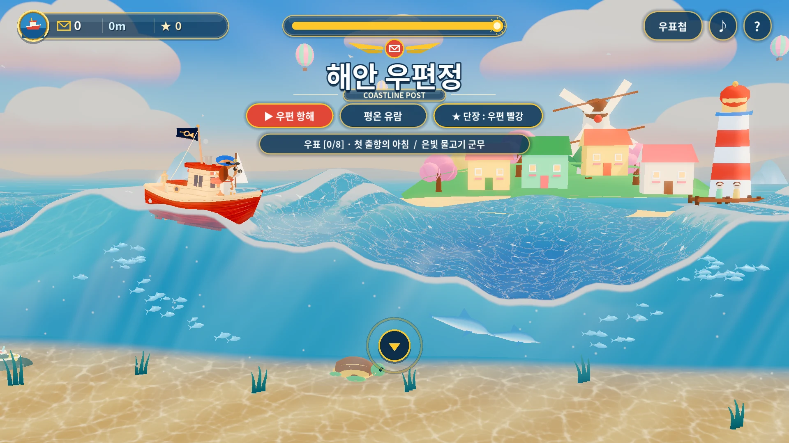
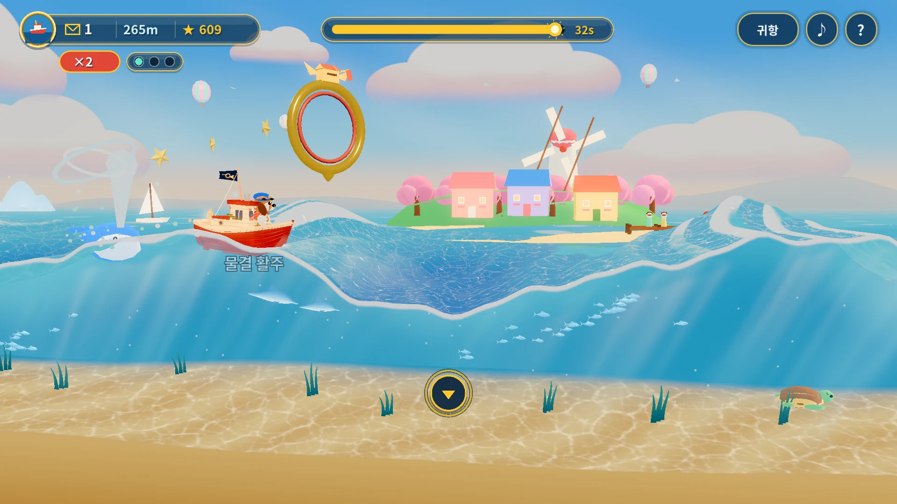
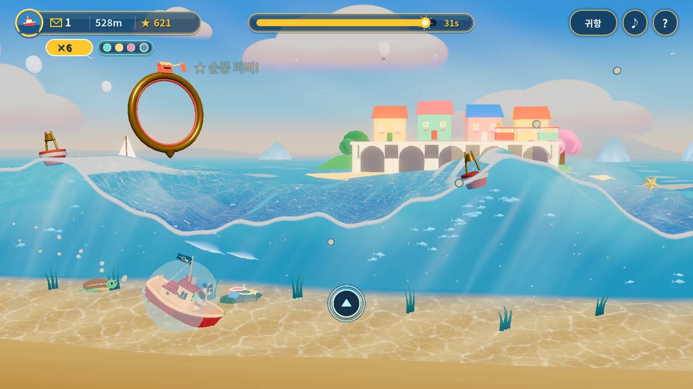
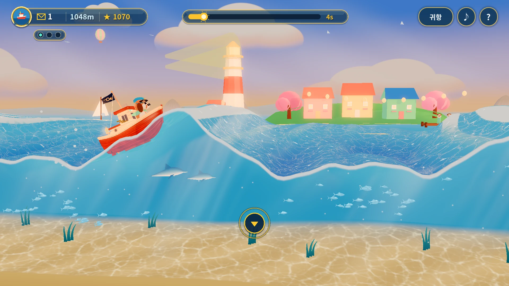
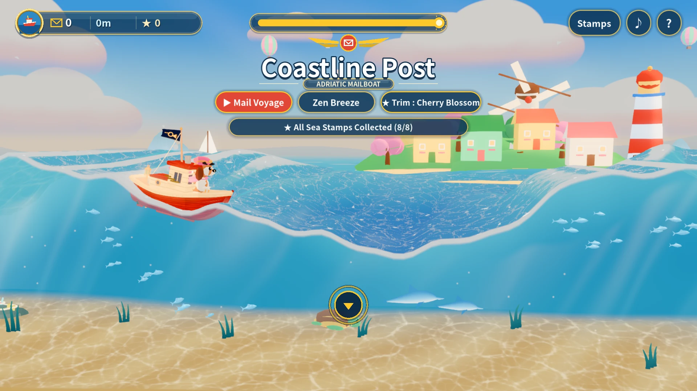

⚠️ [G-004 현재 프로토타입/미완성 요소 고지]
본 빌드는 저사양 내장 GPU 60FPS 스마트 최적화(Eco / Lush 프리셋 · 설치용량 89MB → 51.4MB 다이어트) + 동화 수채·구아슈 감성 5대 변화 해안 & 우체부 강아지 조수 + 4대 손맛(새총 록온 · 자석 스냅 배달 · 아기 고래 분수 & 3별조개 · 순풍 피버 비눗방울 방어막)을 적용한 v9.0 대표 후보 빌드입니다. 부두 주민 모션 세분화, 기항지별 다중 BGM 확장, 스토어 실결제/업적은 비주얼 확정 후 수평 확장 단계(EVOLVING) 항목입니다.
Windows 10 / 11 (64-bit) · 저사양 내장 GPU 60FPS 최적화 · Godot 4.7.2 Native
해안 우편정 (Coastline Post) v9.0 설치파일
바탕화면·시작메뉴 바로가기 자동 생성 · 프로그램 추가/제거(Uninstall) 지원 · 인게임 [?] → 그래픽(자동/저사양 쾌적/동화 고화질) 전환 및 구형 그래픽용 Run_Compatibility_OpenGL3.bat 동봉
• 파일명: CoastlinePost_v9.0_Win64_Setup.exe (53,850,174 bytes / 51.36 MiB — 이전 89.0 MiB 대비 -42.3% 경량화!)
• SHA-256: 839054533b6d1044280ea22de2492f2899f0a0d0535524100cda9b0db05b4683
• 안내: 개인 인디 미서명 인스톨러이므로 Windows SmartScreen 안내 창이 뜨면 [추가 정보(More info)] → [실행(Run anyway)]을 눌러 설치하세요. 설치 경로는 사용자 로컬 폴더(%LOCALAPPDATA%\Programs\Zestward\CoastlinePost)로 관리자 권한 없이 깔끔하게 설치됩니다.


아기 고래 물분수 점프대 & 꽃바람 풍차곶: 귀여운 아기 고래가 뿜는 물줄기 점프대와 3연속 별조개 도-레-미 가이드 아크.

레몬 꼬마기차 철교 & 순풍 피버 비눗방울 방어막: 새총 탄도 록온 조준과 암초를 1회 통통 튕겨내는 비눗방울 보호막.

황혼 별빛 등불포구: 복숭아·라벤더 노을 아래 오두막 창문과 가랜드 등불에 따뜻한 불빛이 켜지는 힐링 연출.

저사양 쾌적(Eco 60FPS) & 4종 강아지 단장: 그림자 없이도 살아나는 구아슈 색감과 즉시 갈아입히는 강아지 모자·어닝.